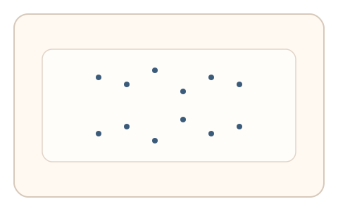
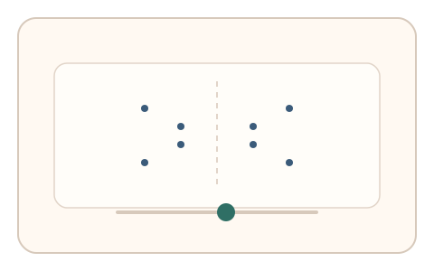

#68
视觉思考范式：Gestalt/对称/频率
已扩展
对称性检测阈值
随机点阵中逐步提高对称度，记录“刚觉得对称”的阈值与决策时间作为敏感度信号。
概念原文
随机点阵中逐步提高对称度，用户调节到“刚觉得对称”。记录阈值与决策时间。
利用人类对对称性的敏感阈值作为信号。
研究背景
人类对对称性具有敏感阈值，需达到一定对称度才产生明显对称感。通过测量阈值与决策时间分布，可形成稳定的知觉特征。
核心机制
- 展示随机点阵并逐步提高对称度。
- 用户调节到“刚觉得对称”。
- 记录阈值位置与决策时间。
- 分析对称敏感度与收敛节奏。
用户流程
- 步骤 1：用户看到点阵对称度变化。
- 步骤 2：用户调节到刚觉得对称。
- 步骤 3：系统记录阈值并判定。
判定信号
对称性阈值
对称敏感度存在稳定阈值范围。
决策时间与回拉路径
真实判断会有短暂停顿与回撤。
判定逻辑
评估阈值与决策时间是否落在人类范围；阈值异常或无回拉判异常。
对抗面
- 脚本直接计算对称度并固定提交
- 重放真实用户的调节序列
防御与缓解
- 随机化点阵密度与噪声分布
- 改变对称轴位置与方向
- 叠加微时序与轨迹信号进行多信号判定
可达性与风险
提供更低密度或替代任务模式，避免对视觉负担过高用户造成不适。
- 屏幕尺寸影响对称感受
- 点阵密度过高导致疲劳
可视化状态

状态 1：随机点阵
点阵对称度逐步提升。

状态 2：阈值调节
用户调节到刚觉得对称。

状态 3：阈值判定
分析对称阈值与决策时间。
参考资料
Symmetry
说明对称性与视觉敏感度。
Perceptual organization
说明对称性在知觉中的作用。